第 1/100 名 · Q = 1.001573
dev:worker_64/layouts_3808.th:0 · HPWL gap = 0.003145474919262008 · Area gap = -0.014950749692876386 · B/G/M = 0/0/0
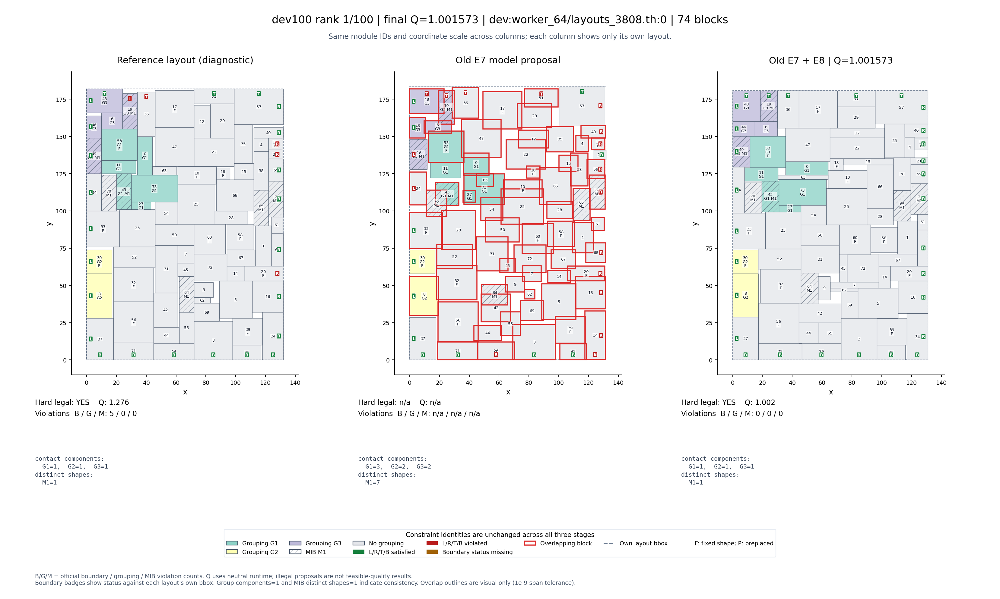
点击图片查看原图并放大模块编号。
Q 越低越好。按最终 Q 排序，选最低5例、中间5例、最高5例，供观察差异；这15例不是随机评估集。完整 dev100 的平均 Q 为 1.211556。这里展示的是旧 E7 attention_geometry 模型＋E8 conic_robust。
每图从左到右：原参考布局、旧模型原始预测、E8 后处理后的最终布局。同一案例三栏使用相同模块编号、颜色、纹理及坐标尺度。原始预测未重新评分，n/a 表示未提供指标。参考布局只用于观察，未作为本次预测或后处理的输入。
颜色代表分组 G，纹理代表同形组 M；F 为固定形状，P 为预放置，L/R/T/B 为边界要求（绿：满足；红：未满足）。虚线是各自包围盒。红色重叠轮廓仅供视觉检查，其容差比官方硬合法判定更严格；最终15例均通过保存的官方硬合法检查。B/G/M 是官方软约束违规数。Q 使用中性运行时间口径，不是正式比赛总分。
dev:worker_64/layouts_3808.th:0 · HPWL gap = 0.003145474919262008 · Area gap = -0.014950749692876386 · B/G/M = 0/0/0

点击图片查看原图并放大模块编号。
dev:worker_94/layouts_7840.th:48 · HPWL gap = 0.0037471880608854146 · Area gap = -0.00031907509785860326 · B/G/M = 0/0/2
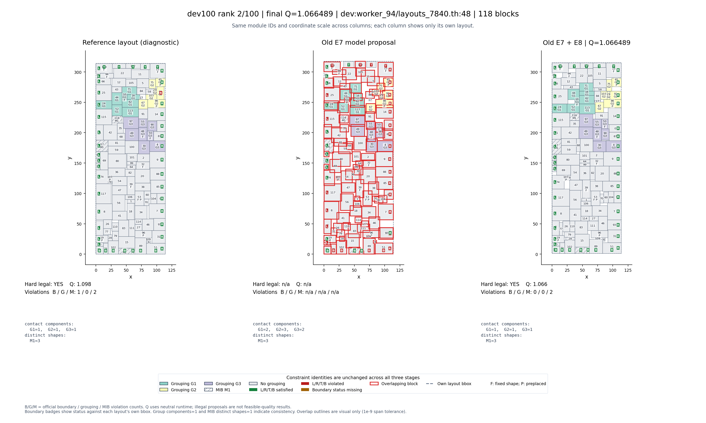
点击图片查看原图并放大模块编号。
dev:worker_62/layouts_6496.th:100 · HPWL gap = -0.007091111106046745 · Area gap = 0.01820689077943245 · B/G/M = 0/0/2
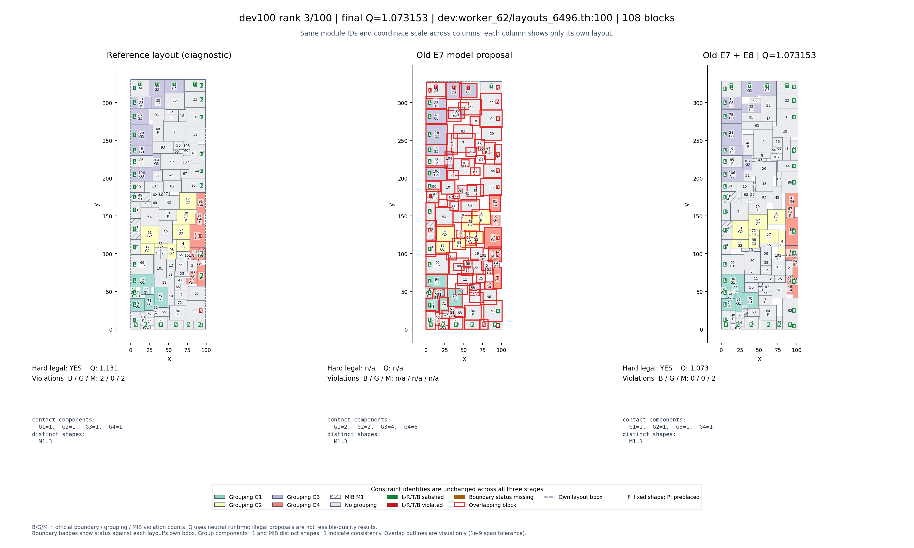
点击图片查看原图并放大模块编号。
dev:worker_48/layouts_0.th:32 · HPWL gap = 0.0031949111152225484 · Area gap = 0.002498771648124933 · B/G/M = 0/0/2
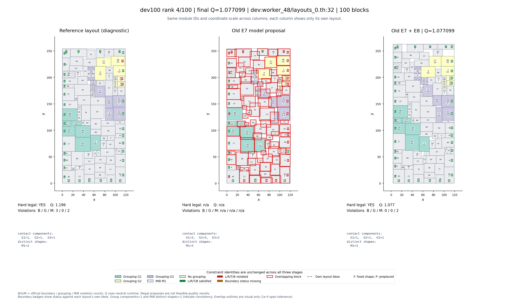
点击图片查看原图并放大模块编号。
dev:worker_44/layouts_5600.th:108 · HPWL gap = 0.025572580107126906 · Area gap = -0.023959753758942107 · B/G/M = 0/0/2
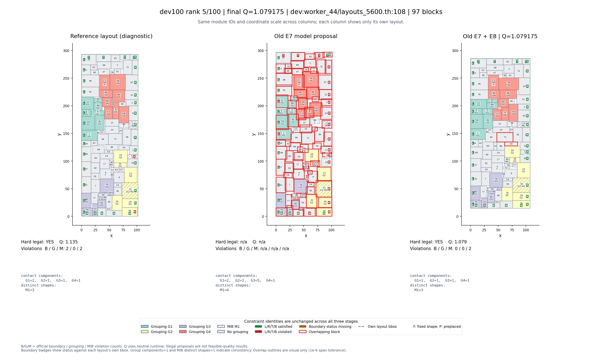
点击图片查看原图并放大模块编号。
dev:worker_91/layouts_5712.th:100 · HPWL gap = 0.0032752850356911486 · Area gap = 0.008972789451903895 · B/G/M = 0/0/4
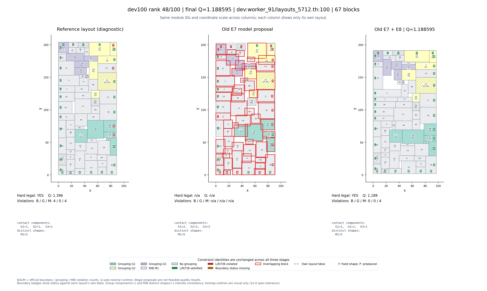
点击图片查看原图并放大模块编号。
dev:worker_85/layouts_1008.th:26 · HPWL gap = 0.002784277688926196 · Area gap = -0.01834345140137169 · B/G/M = 0/0/5
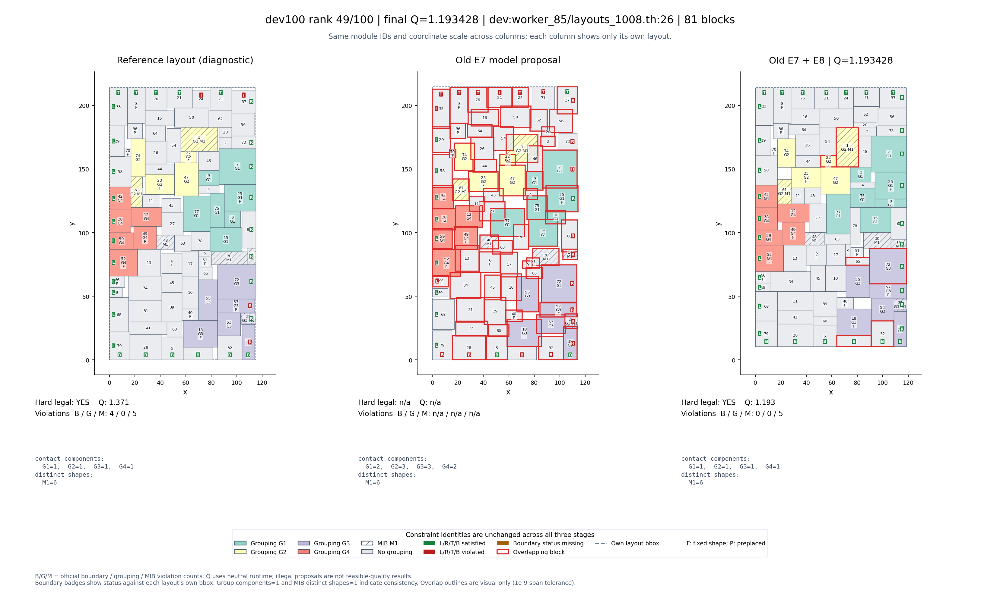
点击图片查看原图并放大模块编号。
dev:worker_40/layouts_4368.th:89 · HPWL gap = -0.004119619947145897 · Area gap = -0.01583763969065254 · B/G/M = 0/0/6
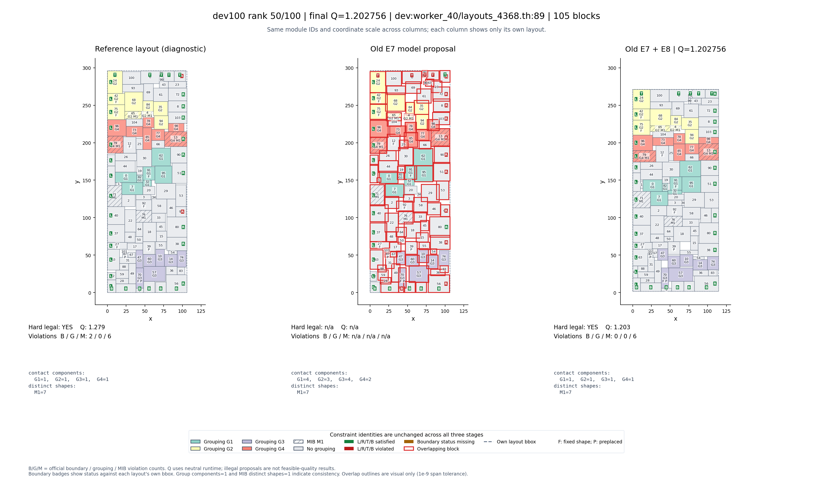
点击图片查看原图并放大模块编号。
dev:worker_23/layouts_7952.th:17 · HPWL gap = 0.013043673849114987 · Area gap = 0.015987680507702995 · B/G/M = 0/0/4
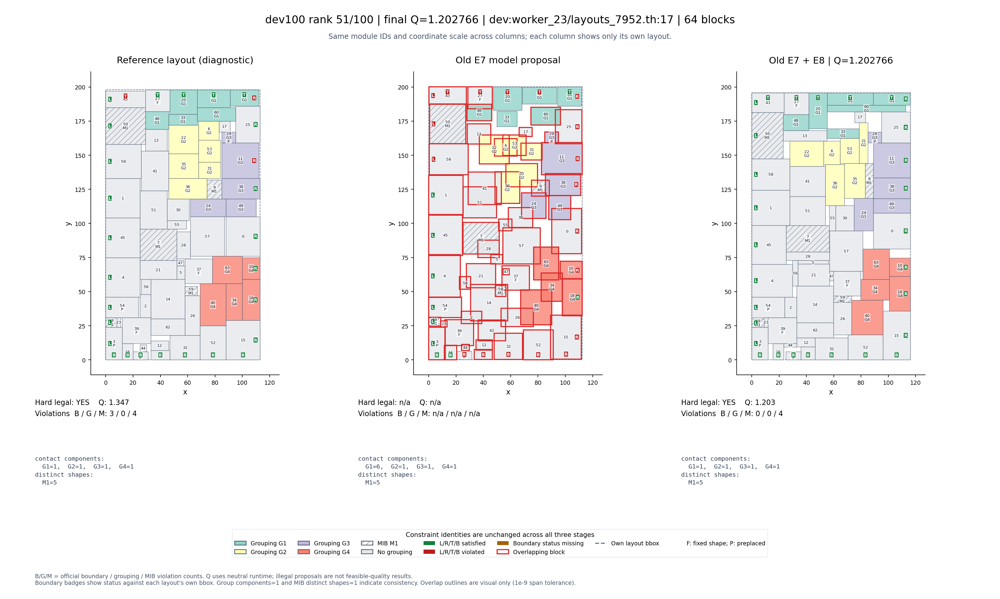
点击图片查看原图并放大模块编号。
dev:worker_20/layouts_9296.th:55 · HPWL gap = -0.016691159857848383 · Area gap = 0.015497837464639314 · B/G/M = 2/0/2
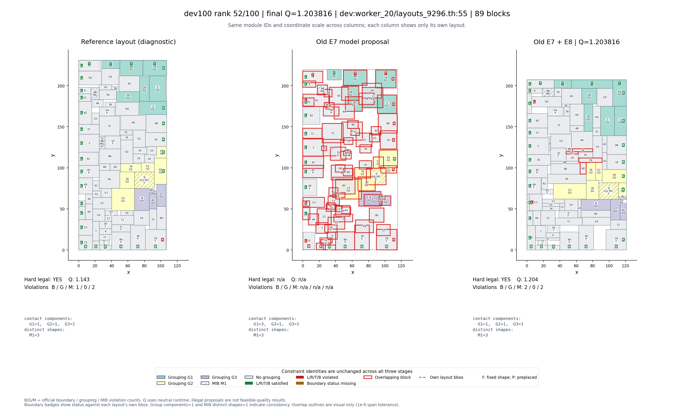
点击图片查看原图并放大模块编号。
dev:worker_73/layouts_5152.th:2 · HPWL gap = 0.020101149555765994 · Area gap = -0.004788554084298592 · B/G/M = 0/0/6
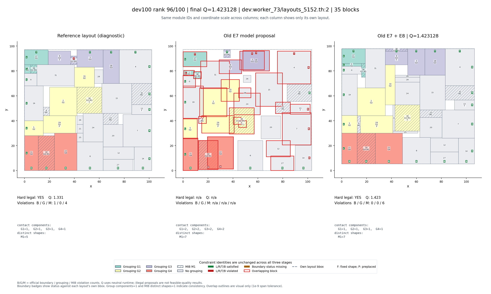
点击图片查看原图并放大模块编号。
dev:worker_95/layouts_336.th:36 · HPWL gap = -0.0029245948831957717 · Area gap = -0.00721732658152848 · B/G/M = 0/0/5
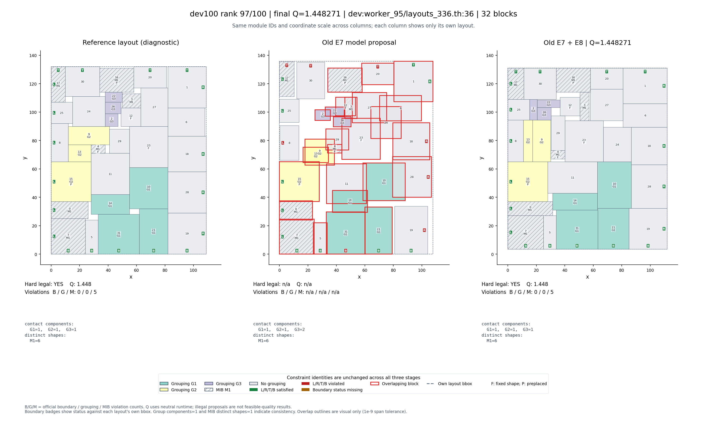
点击图片查看原图并放大模块编号。
dev:worker_89/layouts_224.th:93 · HPWL gap = 0.004996027311352822 · Area gap = -0.016571402597500423 · B/G/M = 0/0/6
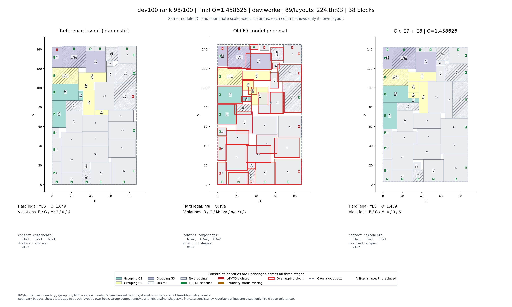
点击图片查看原图并放大模块编号。
dev:worker_59/layouts_784.th:6 · HPWL gap = -0.013606158080582223 · Area gap = -0.01199318401283716 · B/G/M = 0/1/4
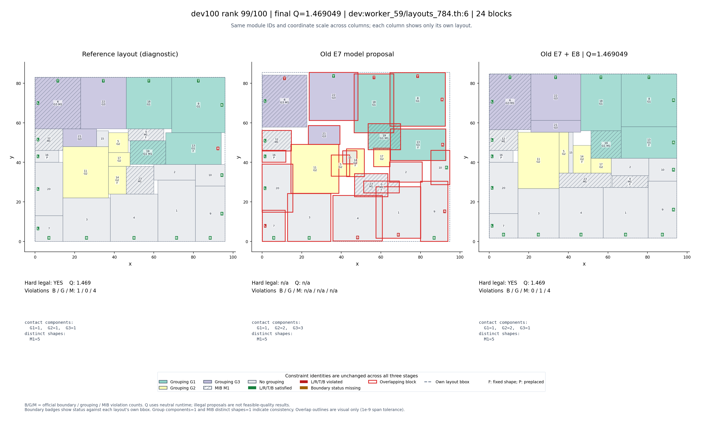
点击图片查看原图并放大模块编号。
dev:worker_37/layouts_7616.th:72 · HPWL gap = 0.0051963236774651075 · Area gap = -0.0016950111622903773 · B/G/M = 0/0/5
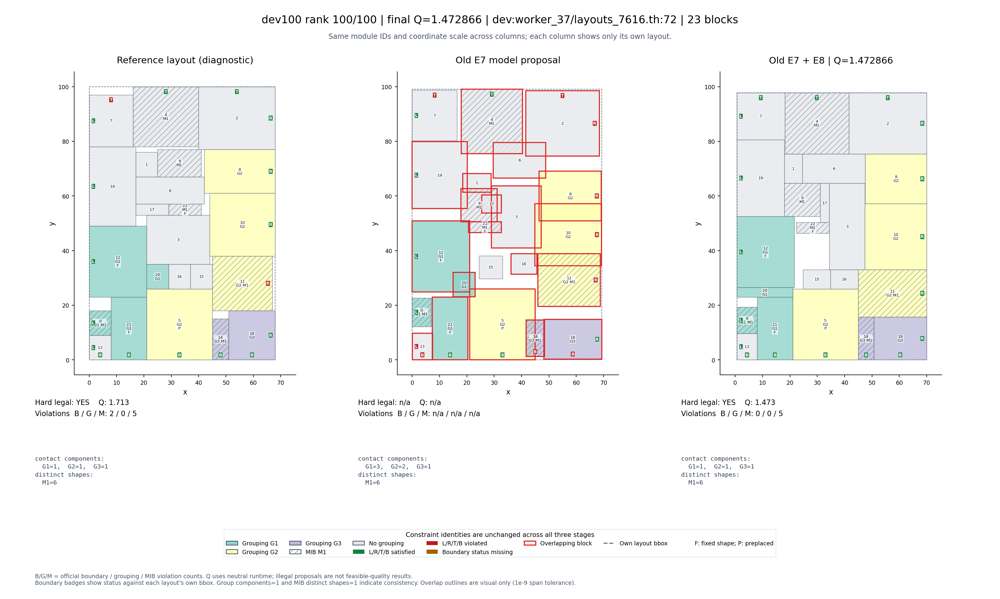
点击图片查看原图并放大模块编号。